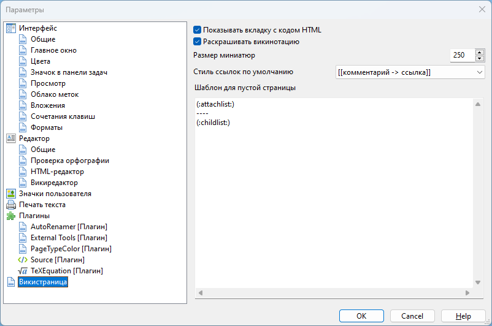

Викистраница

Данный раздел содержит параметры, влияющие на внешний вид викистраниц.
Во время переключения на викистранице в режим Просмотр, незаметно для пользователя происходит создание HTML-кода страницы, именно он и отображается в этом режиме. В большинстве случаев о том, как выглядит полученный HTML-код можно не задумываться. Однако для некоторых задач (например, если вы используете OutWiker для создания страниц сайта или записей в блоге) желательно получить "исходный" HTML-код. Для этого служит режим HTML, но поскольку этот режим нужен далеко не всем, то по умолчанию вкладка для переключения в этот режим скрыта. Чтобы ее показать, нужно установить флажок Показывать вкладку с кодом HTML.
С помощью параметра Размер миниатюр можно установить размер миниатюр по умолчанию, которые будут создаваться с помощью викитега %thumb%Attach:имя_файла%%, если размер миниатюры не задан явным образом в виде параметра этого викитега.
Ссылки на викистраницах могут быть представлены в двух форматах:
- [[Ссылка -> Комментарий ссылки]]
- [[Комментарий ссылки | Ссылка]]
При использовании диалога, вызываемого с помощью пункта меню Вики - Ссылка или соответствующей кнопки на панели инструментов, ссылка может создаваться и в том, и в другом формате. То, какой из этих форматов будет использован, задается с помощью параметра Стиль ссылок по умолчанию.
Если вы создадите викистраницу и оставите ее содержимое пустой (не должно быть даже пробелов), то при переключении в режим Просмотр вместо белого листа можно увидеть что-нибудь более полезное. Например, по умолчанию будет отображаться список прикрепленных файлов и список дочерних страниц. Это поведение можно изменить с помощью параметра Шаблон для пустой страницы.